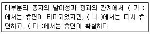
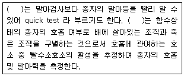
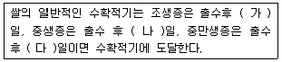
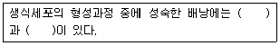

종자기능사 (2016-01-24 기출문제)
1과목: 종자(임의구분)
1. 1대 잡종 종자를 생산하는데 있어서 제웅하지 않고 풍매 또는 충매에 의한 자연교잡을 이용하는 작물은?
- 양배추
- 토마토
- 가지
- 귀리
(정답률: 62%)

2. 다음 중 우량종자가 갖추어야 할 조건이 아닌 것은?
- 우량한 유전적 형질을 갖춘 것
- 채종 후 오래되지 않고 신선한 것
- 발아력을 좋게 하려고 오래 저장한 것
- 충실하고 균일하며 이물질이 없는 것
(정답률: 88%)
3. 다음 중 (가), (나), (다)에 알맞은 내용은?

- 가 : 녹색광, 나 : 적색광, 다 : 초적색광
- 가 : 청색광, 나 : 적색광, 다 : 녹색광
- 가 : 청색광, 나 : 녹색광, 다 : 초적색광
- 가 : 적색광, 나 : 청색광, 다 : 초적색광
(정답률: 72%)
4. 다음종자소독 중 물리적 방법이 아닌 것은?
- 도말법
- 냉수침법
- 적외선 조사
- 건열처리
(정답률: 66%)
5. 치상 후 일정기간까지의 발아율 혹은 표준발아검사에서 중간발아조사일 까지의 발아율은?
- 발아능
- 발아세
- 발아속도
- 종자세
(정답률: 84%)
6. 과실의 성숙이나 눈의 휴면 또는 잎의 이층형성에 효과가 있을 뿐만 아니라 종자 발아를 촉진시키는 물질은?
- 지베렐린
- 사이토키닌
- 아브시스산
- 에틸렌
(정답률: 61%)
7. 다음 중 ( )에 알맞은 내용은?

- 산화효소 검사
- ferric chloride 검사
- 테트라졸륨 검사
- indoxyl acetate 검사
(정답률: 81%)
8. 감자의 휴면타파를 위해 사용하는 생장조절물질로 가장 적당한 것은?
- 옥신
- 사이토키닌
- 지베렐린
- 아브시스산
(정답률: 66%)
9. 종자의 성숙을 3단계로 나눌 때 수분함량이 50% 정도로 유지되며 배의 세포분열이 정지되고 크기만 증가하는 단계는?
- 배의 초기단계
- 배의 발달단계
- 영양분 축적단계
- 성숙단계
(정답률: 73%)
10. 종자 휴면양식에 따라 기작이 다른데 설명이 잘못된 것은?
- 자발휴면은 외적 원인에 의하여 휴면한다.
- 배 휴면은 배 자체내의 휴면 문제이다.
- 종피휴면은 배를 에워싸고 있는 종피에 의하여 휴면이 일어나는 경우이다.
- 어떤 식물의 종자에서는 두가지 휴면이 동시에 복합적으로 나타나기도 한다.
(정답률: 70%)
11. 일반적인 종자증식 체계상의 흐름으로 옳은 것은?
- 기본식물 종자 → 보급종 → 원종 → 원원종
- 기본식물 종자 → 원원종 → 원종 → 보급종
- 원원종 → 원종 → 보급종 → 기본식물 종자
- 원원종 → 원종 → 기본식물 종자 → 보급종
(정답률: 82%)
12. 다음 중 종자의 발아에 관여하는 내적 요인으로 볼 수 없는 것은?
- 온도
- 유전성의 차이
- 종자의 성숙도
- 육종에 의한 발아력의 향상
(정답률: 78%)
13. 다음 중 (가), (나), (다)에 가장 알맞은 내용은?

- 가 : 25~30, 나 : 35~40, 다 : 40~45
- 가 : 25~30, 나 : 40~45, 다 : 45~50
- 가 : 30~35, 나 : 35~40, 다 : 40~45
- 가 : 40~45, 나 : 45~50, 다 ; 50~55
(정답률: 60%)
14. 다음 중 원원종의 의미를 가장 잘 설명한 것은?
- 양이 적어서 증식시킬 목적으로 재배하는 것
- 채종업자로부터 농민의 손에 들어가 재배하는 것
- 기본식물을 분양받아 육종가의 감독아래 전문가가 증식한 것
- 우량 품종이 아닌 것
(정답률: 74%)
15. 제(臍)는 종자가 성숙한 후까지 그 흔적이 남아 있는데, 제의 위치가 종자의 뒷면에 있는 종자는?
- 배추
- 상추
- 콩
- 시금치
(정답률: 72%)
16. 다음 중 종자 소독의 이점과 거리가 먼 것은?
- 종자 오염균의 피해를 막을 수 있다.
- 발아 중에 해충이나 토양 미생물에 의한 피해를 경감시킬 수 있다.
- 유묘에 대한 병균이나 해충의 피해로부터 침투 보호 작용을 한다.
- 발아율과 발아세를 향상시킬 수 있다.
(정답률: 71%)
17. 종자전염병의 검정방법이 아닌 것은?
- 한천배지 검정법
- 유묘병징 조사법
- 혈청학적 검정법
- 노화촉진 검사법
(정답률: 67%)
18. 감자 바이러스 ELISA법으로 검정했을 경우 다음 중 ELISA법이 속하는 검정법은?
- 한천배지 검정
- 여과지배양 검정
- 생물학적 검정
- 혈청학적 검정
(정답률: 63%)
19. 종자가 발아하는 순서 중 제일 먼저 일어나는 과정은?
- 수분의 흡수
- 효소의 활성
- 씨눈의 생장 개시
- 종피의 파열
(정답률: 79%)
20. 다음 중 종자의 수분 함량 검사 시 사용되는 장치에 대한 설명으로 틀린 것은?
- 분쇄기는 흡수성 물질로 이루어져야 한다.
- 분석용 저울은 0.001g 단위까지 측정할 수 있어야 한다.
- 대립종자 절단 시 외과용 메스를 이용한다.
- 체는 0.50mm, 1.00mm, 4.00mm 크기의 철제로 된 그물체가 필요하다.
(정답률: 68%)
2과목: 작물육종(임의구분)
21. 포자체형 자가불화합성 식물의 S1S3×S1S4교배조합을 작성하였다. 후대의 유전자형으로 알맞은 것은? (단, 자가불화합성 유전자는 각각 화분친과 종자친에서 공우성)
- S1S2, S1S3, S2S2, S2S3
- S1S2, S1S3
- S2S3
- 종자가 생기지 않음
(정답률: 62%)
22. 다음 중 품종의 유전적 퇴화의 원인이 아닌 것은?
- 이형유전자 분리
- 자연교잡
- 기상적 원인에 의한 퇴화
- 이형종자의 기계적 혼입
(정답률: 61%)
23. 다음 중 ( )에 들어갈 용어를 바르게 나열한 것은?

- 난핵, 극핵
- 난핵, 영양핵
- 극핵, 영양핵
- 영양핵, 정핵
(정답률: 80%)
24. 약배양에 의한 육종방법의 가장 큰 장점은?
- 교배과정이 필요 없다.
- 선발과정이 필요 없다.
- 돌연변이 개체가 다른 육종법에 비하여 많다.
- 품종의 육종 연한을 크게 단축시킬 수 있다.
(정답률: 62%)
25. 유전자에 관한 설명 중 옳지 않은 것은?
- 유전자는 아미노산 합성 정보를 보유하고 있다.
- 고등식물의 유전자는 DNA로 이루어져 있다.
- 유전자들은 돌연변이 할 수 있다.
- 한 식물체에서 잎 세포의 DNA와 뿌리 세포의 DNA 구성이 서로 다르다.
(정답률: 70%)
26. 다음 중 4배체를 이용하는 작물은?
- 보리
- 메밀
- 감자
- 고추
(정답률: 55%)
27. 우리나라에서 벼, 보리 등의 원원종포는 어디에 설치하고 있는가?
- 채종을 하는 독농가
- 각 시 군의 농업기술센터
- 각 도 농업기술원
- 농촌 진흥청
(정답률: 58%)
28. 자식계통간 교배에 의한 1대잡종 품종에 속하지 않는 것은?
- 톱교배
- 단교배
- 복교배
- 3원교배
(정답률: 52%)
29. 멘델의 독립유전 법칙에 관한 설명으로 옳은 것은?
- 두 쌍의 대립유전자가 후대에 가서 서로 독립적으로 분리되어 형질을 나타낸다.
- 우성의 유전인자가 독립적으로 형질을 나타낸다.
- F1에서 나타나지 않았던 형질이 F2에서 독립적으로 분리하여 나타난다.
- 연관된 유전인자도 후대에서는 독립적으로 형질을 나타낸다.
(정답률: 52%)
30. 비교적 소수의 유전자가 관여하고 있을 때 적용되는 방법이 아닌 것은?
- 계통육종법
- 파생계통육종법
- 여교잡육종법
- 약배양육종법
(정답률: 39%)
31. 여교잡육종법을 적용할 수 없는 경우는?
- 유전구성이 단순한 우량형질의 이전
- 목표형질 이외의 형질들에 대한 새로운 유전자 조합의 기대
- 다수형질의 단일 품종으로의 수렴
- 재배품종이 가지고 있는 소수형질의 결함 개량
(정답률: 43%)
32. 다음 중 일반적으로 유전분산 성분이 아닌 것은?
- 상가적 분산
- 상위성 분산
- 우성적 분산
- 표현형 분산
(정답률: 53%)
33. 피자식물에서 1개의 화분모세포가 감수분열하고 성숙하여 만드는 화분 수는?
- 1
- 2
- 3
- 4
(정답률: 51%)
34. 육종의 성과와 가장 거리가 먼 것은?
- 경영의 합리화
- 재배한계의 확대
- 품질의 개선
- 유기농업기술의 발전
(정답률: 50%)
35. 다음 중 집단육종법을 이용하는 이유는?
- 육종을 위한 시험포장 면적이 적게 들기 때문에
- 취급이 용이하고, 선발이 간편하기 때문에
- 질적형질이나 유전력이 높은 양적형질의 선발에 유리하기 때문에
- 육종과 동시에 목적하는 형질의 유전양상을 어느 정도 밝힐 수 있기 때문에
(정답률: 54%)
36. 다음 중 형질전환에 의한 품종육성에 대한 설명으로 옳지 않은 것은?
- 형질전환 방법을 이용하면 내충성, 바이러스 저항성, 제초제 저항성 등의 특성을 도입할 수 있다.
- 형질전환은 아그로박테리아를 이용한 방법과 직적도입 방법 등을 이용한다.
- 형질전환에 의하면 전통육종보다 육종기간을 획기적으로 단축할 수 있다.
- 형질전환 식물의 선발방법은 기본적으로 잡종 세포의 선발과 동일하다.
(정답률: 42%)
37. 하나의 염색체상에 둘 이상의 유전자들이 함께 있는 것을 무엇이라고 하는가?
- 다면발현
- 재조합
- 복수유전자
- 연관
(정답률: 45%)
38. 각 교배 양식에서 교배모본의 유전적 기여도가 적절하지 않은 것은?
- A/B : A품종 1/2, B품종 1/2
- A/B//C : A품종 1/4, B품종 1/4, C품종 1/2
- A/B 2 : A품종 1/3, B품종 2/3
- A/B//C/D : A품종 1/4, B품종 1/4, C품종 1/4, D품종 1/4
(정답률: 53%)
39. 다음 중 분리 육종법이 아닌 것은?
- 집단선발법
- 순계도태법
- 가계선발법
- 계통육종법
(정답률: 35%)
40. 조합능력과 관련된 내용으로 옳지 않는 것은?
- 조합능력은 교배친의 상대적 능력이다.
- 조합능력에는 일반조합능력과 특정조합능력이 있다.
- 조합능력 검정방법은 이면교배, 여교배 등이 있다.
- 이면교배는 일반조합능력과 특정조합능력을 검정할 수 있다.
(정답률: 45%)
3과목: 작물(임의구분)
41. 다음 중 장일성 식물로만 나열된 것은?
- 들깨, 고구마
- 들깨, 시금치
- 보리, 콩
- 티머시, 아주까리
(정답률: 50%)
42. 다음 중 토마토를 연작 재배하면 나타나는 병해는?
- 갈반병
- 탄저병
- 바이러스병
- 풋마름병
(정답률: 58%)
43. 씨감자의 한쪽 무게로 가장 적당한 것은?
- 1g
- 10g
- 30g
- 80g
(정답률: 66%)
44. 젖은 토양에 중력의 1000배의 원심력을 작용시킬 경우 잔류하는 수분상태는?
- 수분당량
- 위조계수
- 최대용수량
- 흡습계수
(정답률: 46%)
45. 다음 중 우리나라에서 작물의 주요 기상재해가 아닌 것은?
- 가뭄해
- 냉해
- 풍해
- 고온장해
(정답률: 60%)
46. 다음 중 자생란으로만 나열된 것은?
- 반다, 카틀레야
- 풍란, 팔레놉시스
- 심비디움, 새우란
- 댄드로비움, 반다
(정답률: 57%)
47. 보리 답리작재배의 기계화 파종양식 중 가장 먼저 보급되기 시작된 것은?
- 평면세조파
- 휴립광산파
- 휴립세조파
- 부분경운파
(정답률: 45%)
48. 다음 중 수량이 많고 사료나 공업용 원료로 주로 쓰이는 옥수수 종자는?
- 마치종
- 경립종
- 연립종
- 감미종
(정답률: 49%)
49. 다음은 공예 작물이다. 분류와 작물명칭이 옳게 짝지어지지 않은 것은?
- 염료 작물 - 맥문동
- 섬유료 작물 - 목화
- 전분료 작물 - 율무
- 향신료 작물 - 박하
(정답률: 63%)
50. 점토나 미사가 많은 고운 토양의 특성이 아닌 것은?
- 공기 유통이 더디다
- 지온 상승이 빠르다.
- 물을 지니는 힘이 좋다.
- 양분을 지니는 힘이 좋다.
(정답률: 55%)
51. 온실에서 CO2를 인공적으로 공급할 때, 광합성이 증대되어 작물의 수량이 증대되는 적정 CO2 시비의 수준은?
- 50~100ppm
- 300~400ppm
- 500~700ppm
- 1000~1500ppm
(정답률: 48%)
52. 씨뿌림에 관한 설명 중 옳지 않은 것은?
- 씨뿌림 깊이는 종자에 따라 달라진다.
- 기계로 씨뿌림을 하면 발아가 일정하지 않다.
- 종자의 크기가 작은 경우, 줄뿌림이나 흩어뿌림 한다.
- 옥수수, 콩 등 씨앗이 큰 작물은 1~2알씩 일정한 간격으로 심는다.
(정답률: 73%)
53. 채소를 이용부위에 따라 분류할 때 열매 채소가 아닌 것은?
- 동부
- 오이
- 호박
- 토마토
(정답률: 68%)
54. 다음 중 도열병이 많이 발생하는 조건으로 옳지 않은 것은?
- 기온이 낮을 때
- 모내기가 늦어졌을 때
- 질소질 거름을 많이 주었을 때
- 흐리고 비가 자주 오는 날이 많을 때
(정답률: 47%)
55. 다음 중 버널리제이션 처리를 위한 최아 시 종자의 흡수량이 가장 적은 것은?
- 보리
- 호밀
- 귀리
- 옥수수
(정답률: 41%)
56. 씨뿌리기를 할 때 노력이 가장 많이 들어가는 방법은?
- 점뿌림
- 줄뿌림
- 흩어뿌림
- 모둠뿌림
(정답률: 72%)
57. 알뿌리 형태가 구슬줄기가 아닌 것은?
- 토란
- 생강
- 크로커스
- 시클라멘
(정답률: 50%)
58. 다음 중 토마토 촉성재배 할 때 육묘일수로 적당한 것은?
- 25~30일
- 35~40일
- 40~45일
- 50~60일
(정답률: 36%)
59. 벼의 줄기 속을 파먹는 해충은?
- 조명나방
- 파밤나방
- 미국흰불나방
- 이화명나방
(정답률: 72%)
60. 다음 중 기원지가 남아메리카 지역인 식물로만 짝지어진 것은?
- 벼, 오이
- 콩, 조
- 감자, 토마토
- 당근, 마늘
(정답률: 65%)